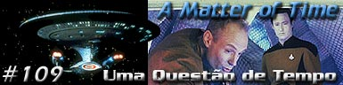
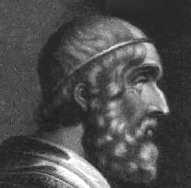
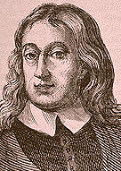
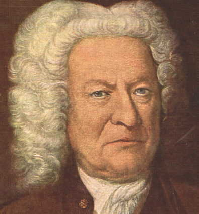
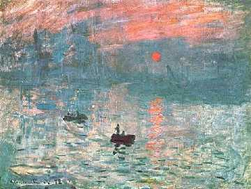
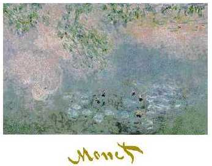
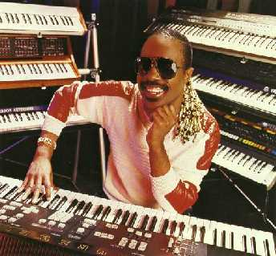

|

Texto de
Susana
Lopes de Alexandria

Falso
historiador cita a La Forge
nomes de cegos famosos

|
Sabemos que o historiador do sculo 26, que estaria fazendo uma pesquisa no sculo 24 no episdio "A Matter of Time", no era nem historiador e nem vinha do futuro. Apesar disso, ele tinha um bom conhecimento de Histria, pois menciona corretamente a Geordi La Forge nomes de cinco artistas famosos que tambm eram cegos como o engenheiro da Enterprise: Homero, Milton, Bach, Monet e Wonder. Saiba um pouco sobre cada um deles.
Homero  As controvrsias, lendas e a pouca confiabilidade dos dados biogrficos dobre Homero fizeram com que j no sculo 18 muitos questionassem at mesmo a existncia do poeta. As diferenas de tom e estilo entre a Ilada e a Odissia levaram alguns crticos a aventar a hiptese de que poderiam ser a recomposio de poemas anteriores, ou que teriam sido criadas por autores diferentes. Todas essas dvidas constituem a chamada "questo homrica" e permanecem abertas discusso. O capito Picard gosta muito de ler Homero -- no original, em grego! Milton  Em 1652, ficou completamente cego. Com a restaurao da monarquia, foi preso, mas logo depois libertado. Viveu seus ltimos dias com dificuldades financeiras, por causa do grande incndio de Londres, de 1666. Mesmo sem enxergar, ditou suas obras mais famosas: Paraso Perdido (1667), poema sobre a queda de Lcifer e o pecado original, e Paraso Reconquistado, em que Cristo volta Terra reconquistar o que Ado tinha perdido. Ao final do episdio da srie clssica "Space Seed" (A Semente do Espao), Khan cita um verso do Paraso Perdido - " melhor reinar no inferno do que servir no cu" - quando Kirk decide deix-lo no inspito planeta Ceti Alfa 5. Se voc prestar ateno nas cenas iniciais do filme "Jornada nas Estrelas II - A Ira de Khan", vai perceber que na estante de Khan, dentro da nave Botany Bay, h uma cpia do Paraso Perdido, de Milton.
Bach O organista e compositor alemo Johann Sebastian Bach (1685-1750) foi um dos mais produtivos gnios da msica europia. Ele nasceu numa famlia que por sete geraes deu origem a pelo menos 53 msicos de importncia. Bach recebeu suas primeiras lies musicais de seu pai, o msico Johann Ambrosius. Casou-se duas vezes de teve 20 filhos. Desempenhou diversos cargos: membro de coral, maestro de cmara, violinista de orquestra de cmara do prncipe Johann Ernst de Weimar, organista de igreja, mestre-de-capela e diretor de orquestra. Bach conhecido como o mestre supremo do contraponto (combinao simultnea de duas ou mais melodias). Era capaz de entender e utilizar qualquer tipo de recurso musical existente no barroco e combinar numa mesma composio diferentes esquemas rtmicos. Sua capacidade para explorar e valorizar os recursos, estilos e gneros musicais permitiu-lhe introduzir importantes mudanas na linguagem instrumental. A grandeza de Bach se deve tanto sua habilidade tcnica como expressividade de sua msica. Sua obra muito extensa: inclui cantatas (cerca de 300), As paixes segundo So Joo e segundo So Mateus, o Magnificat, a Missa em si menor, preldios, fugas, corais para rgo, os Concertos de Brandemburgo, concertos para cravo e orquestra e sonatas, entre outras composies. O pianista brasileiro Joo Carlos Martins considerado um dos melhores intrpretes de Bach do mundo.  Anos e anos de trabalho sob luz fraca e insuficiente foram responsveis pela cegueira de Bach. Seguindo o conselho de amigos, ele procurou o oftalmologista John Taylor (que havia operado o compositor Handel), com quem se submeteu a duas cirurgias de catarata, em maro e abril de 1750. Mas sua viso piorou por causa de uma infeco, que acabou por minar sua sade. Passou os ltimos meses de sua vida num quarto escuro -- pois no suportava a claridade -- revisando suas ltimas obras com a ajuda de um sobrinho. Ento, no dia 28 de julho de 1750, Bach acordou e disse que estava conseguindo suportar a claridade e enxergar muito bem. Naquele mesmo dia, porm, teve um derrame, seguido de uma forte febre, e morreu noite, s 20h45. Como uma plida amostra de sua obra, clique nos links abaixo para ouvir algumas peas em Midi. bom salientar que obras como os Concertos de Brandenburgo, por exemplo, ficam infinitamente melhores como devidamente executadas por uma orquestra. Concerto
de Brandenburgo # 3 (149KB)
Monet O pintor francs Claude Monet (1840-1926) um dos expoentes do Impressionismo (movimento de pintores franceses do final do sculo 19 que surgiu como reao arte acadmica e considerado o ponto de partida da arte contempornea).  Impresso: O Sol se Levanta -- um dos primeiros quadros do Impressionismo Ele trabalhava ao ar livre, pintando paisagens e cenas da sociedade burguesa de sua poca. medida que seu estilo evolua, Monet transgredia com mais freqncia os convencionalismos tradicionais da arte. Em 1890, adquiriu uma casa na vila de Giverny, perto de Paris, onde iniciou suas famosas sries de pinturas, conjuntos de obras com o mesmo tema ninfias, lamos, a catedral de Rouen, a estao de Saint-Lazare, o Sena , representadas sob diferentes luzes diferentes, conforme as horas do dia ou as estaes do ano. No incio do sculo, Monet visitou vrios pases europeus. Na Inglaterra, pintou uma srie de paisagens do Rio Tmisa. A partir de 1907 comeou a ter problemas com a viso. Com a evoluo da doena suas telas tornaram-se quase abstratas. Em 1923, Monet j estava quase cego. Foi ento operado da catarata e passou a usar culos. Em 5 de Dezembro de 1926, morreu em Giverny.  Ninfias: pintura cada vez mais abstrata, por problemas com a viso
Wonder De todos os artistas cegos citados pelo falso historiador do episdio "A Matter of Time", talvez o mais conhecido por sua cegueira seja o cantor e compositor americano Stevie Wonder, cego de nascena. Wonder nasceu em Michigan no dia 13 de maio de 1950. Quando sua famlia mudou-se para Detroit, a me do pequeno Stevie, ento com 7 anos, ficou com medo de deix-lo sair de casa sozinho. Ento, para matar o tempo, ele batia colheres nas panelas ou em qualquer outra superfcie, para acompanhar o ritmo das msicas que ouvia no rdio. Nascia ali o msico que hoje conhecemos. Wonder aprendeu vrios instrumentos e comeou a tocar na igreja local, tornando-se a sensao da vizinhana. O fundador do grupo Motown, Berry Gordy, descobriu Stevie Wonder quando este tinha 10 anos e, na mesma hora, o contratou. A primeira gravao de Wonder com o grupo foi no lbum 12-Year-Old Genius. Com o Motown, emplacou grandes sucessos, como a cano "For Once in My Life".  Stevie Wonder superou sua cegueira de nascena Aos 21 anos, Stevie Wonder saiu do grupo para seguir carreira solo. Gravou discos que misturavam elementos do gospel, rock, jazz e ritmos africanos e latinos. Entre 1972 e 1976, gravou um sucesso atrs do outro, como as canes "Superstition" e "You Are the Sunshine of My Life". Em 1973, um acidente de carro quase o matou e fez com que reavaliasse sua vida. Comeou a gravar msicas que defendiam causas sociais, como o movimento anti-racista ("Ebony and Ivory", com Paul McCartney) e a cruzada contra a fome no mundo ("We Are the World"). Nos anos 90, Wonder fez a trilha sonora de Jungle Fever (Febre na Selva), filme controverso de Spike Lee, e lanou o lbum Conversation Peace, muito elogiado pela crtica. A longa carreira de Stevie Wonder impressionante, no apenas por seu talento musical, mas por sua persistncia em superar os obstculos -- o principal deles a cegueira. Uma de suas ltimas participaes num leilo de caridade: ele dirigiu a BMW de James Bond no palco, para ajudar no seu arremate. Para voc que j conhece se lembrar, e voc que no conhece ter uma idia, abaixo esto alguns arquivos Midi com canes de Stevie Wonder. Lembre-se: o original sempre melhor! For
Once in My Life (74 KB) |